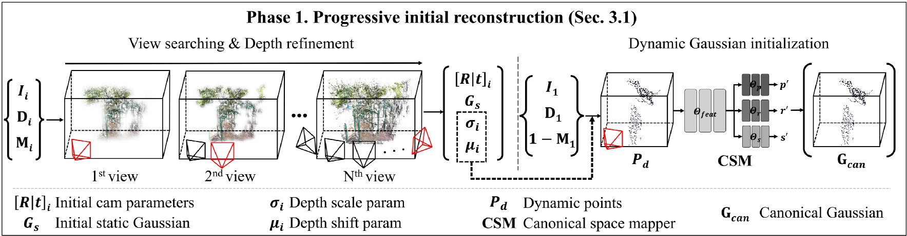

Enhancing Monocular Dynamic Gaussian Splatting via Adaptive Pipeline Integration
Anonymous ICCV submission
Paper ID 15368
Video Results on Various Datasets
Nvidia Dataset
Abstract
Reconstructing 4D dynamic scenes from monocular RGB video presents significant challenges, primarily due to the complexities involved in estimating depth, camera pose, and the motion of dynamic objects.
Recent studies have demonstrated the effectiveness of Gaussian-based spatial representations for modeling dynamic objects. However, there are still two main limitations.
First, most methods rely on Structure-from-Motion (SfM) algorithms to obtain point clouds and camera poses as initial parameters for Gaussian representations, which often yield unstable results for dynamic scenes.
Second, they typically do not explicitly separate static and dynamic regions, resulting in degraded the rendering quality of static areas.
To address these challenges, we introduce a novel monocular dynamic scene rendering framework that does not require pre-acquired camera poses or point clouds. Our method explicitly separates static and dynamic components, reconstructing dynamic objects within a canonical space.
Experimental evaluations using PSNR and LPIPS metrics demonstrate the superior rendering quality and spatial consistency of our approach in dynamic scenes.
Moreover, our framework offers seamless plug-and-play compatibility with existing 4D Gaussian Splatting methods, facilitating high-fidelity 4D scene reconstruction.
Problem Setting
Previous approaches rely on sparse points extracted from SfM, which do not provide initial points for dynamic objects. In contrast, our method generates point clouds separately for static and dynamic regions. Additionally, previous approaches indiscriminately deform both dynamic and static points, thereby causing flickering on the other hand our approach deforms only dynamic points, thereby preserving stability in static regions. The results below illustrate the stability of our static regions and high rendering quality. Heatmaps, overlaid on the synthesized novel view, show the disparity compared to the ground truth.
Method
Overall pipeline
RGB images are first processed using a pretrained model to extract monocular depth and a foreground mask.
Phase 1
To ensure stable monocular dynamic scene reconstruction, we initialize the representation of static and dynamic regions separately from the point cloud level. Using RGB images and derived data, we progressively optimize the camera pose and depth parameters by focusing on the static regions. The point cloud of dynamic objects passes through the Canonical Space Mapper (CSM) to construct its canonical position and form after being back-projected using the modified depth.

Phase 2
Gaussians in the canonical space are transformed to match the shape and position of each frame through a deformation network that takes time as an additional input. This explicit separation allows us to optimize the static and dynamic Gaussians independently. The gradient flow of optimization is adjusted to learn the camera pose, deformation network, and Gaussians in the canonical space.
Results
Qualitative comparison of novel view synthesis results on the Nvida dataset and UCSD dataset. Previous methods struggle to generate accurate
novel views, exhibiting artifacts and inconsistencies. In contrast, our method achieves superior synthesis, demonstrating superior visual
quality and consistency.
Ablation
Compared to the baseline model, our proposed framework demonstrates more accurate rendering for monocular dynamic scenes. Furthermore, as deformations evolve over time, our framework can be adapted to update its performance accordingly.
After obtaining the optical flow using an optical flow estimation model, a pixel-level threshold is applied to the acquired optical flow to extract the top k points. These points represent the pixel coordinates with the most movement in each frame. Subsequently, these points are used as priors for SAM2 to obtain the segmentation mask.
Plug-and-Play
Compared to the baseline model, our proposed framework demonstrates more accurate rendering for monocular dynamic scenes. Furthermore, as deformations evolve over time, our framework can be adapted to update its performance accordingly.
Flickering effect
Qualitative comparison of the difference map between rendered images and ground truth. This
heatmap illustrates deviations from the average of the rendered images, with brighter areas highlighting regions of significant flickering or
instability.